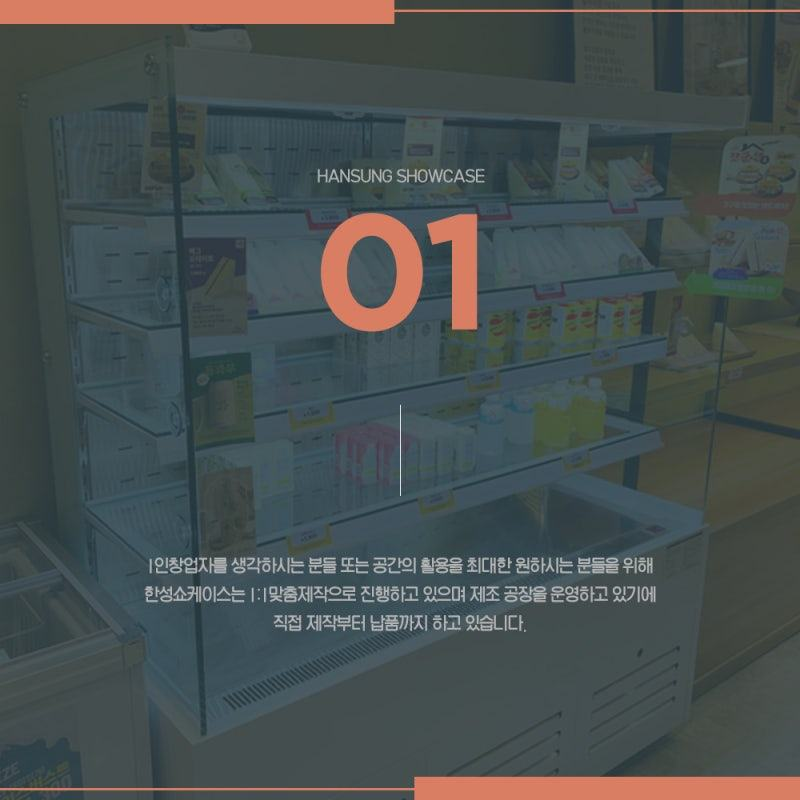
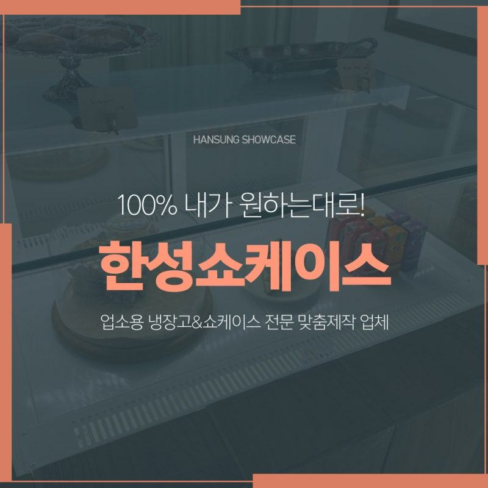
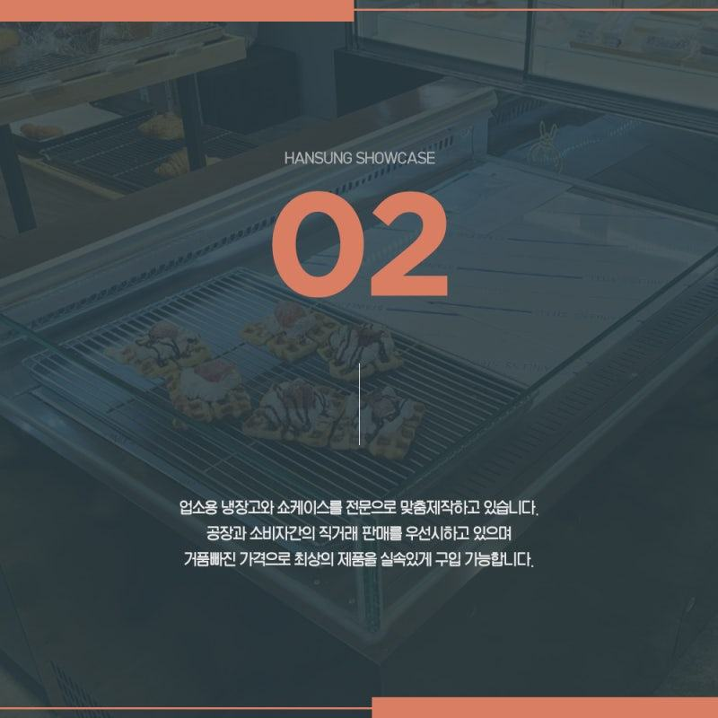
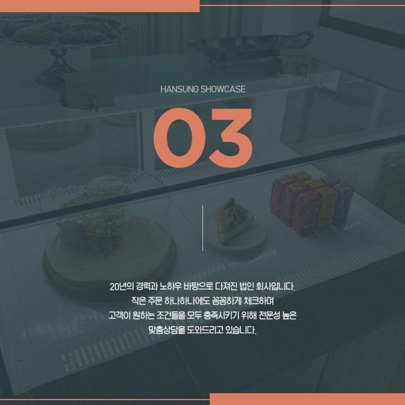
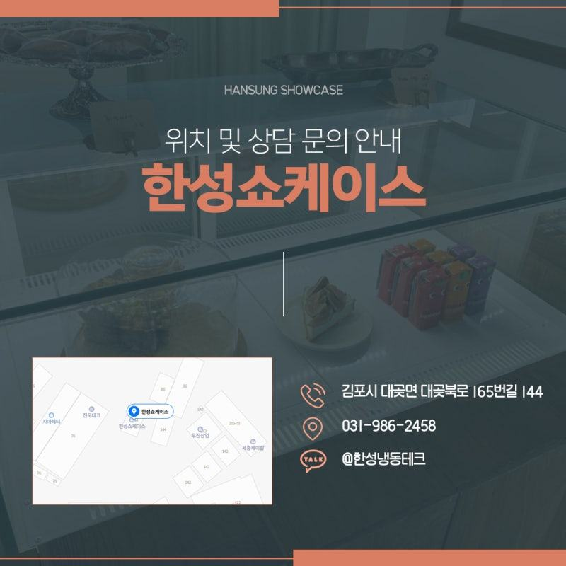

정육쇼케이스
정육쇼케이스 배송, 반입 전에 재 둬야 할 곳과 설치 당일 준비

정육쇼케이스는 길고 무거운 데다 앞면 유리가 커서, 매장 출입문과 복도, 엘리베이터, 계단 꺾임 구간의 폭과 높이를 미리 재 두는 것이 배송 준비의 핵심입니다. 설치 자리의 바닥 수평과 전용 전기, 배수 위치까지 확인해 두면 설치 당일 바로 고기를 진열할 수 있습니다.
안녕하세요. 정육점과 정육식당에 맞춘 정육쇼케이스를 직접 제작하고 설치까지 맡는 한성쇼케이스입니다.
쇼케이스 디자인과 크기는 꼼꼼하게 정하셨는데, 막상 배송 당일 출입문이 좁아 들어가지 못하거나 엘리베이터에 실리지 않아 일정이 밀리는 경우가 있습니다.
오픈 날짜를 잡아 둔 사장님 입장에서는 하루 이틀 늦어지는 것도 큰 부담이죠.
정육쇼케이스는 고기를 길게 펼쳐 보여 주기 위해 가로가 긴 제품이 많고, 곡선 유리나 큰 전면 유리가 달려 있어 반입 경로를 더 세심하게 봐야 합니다.
오늘은 정육쇼케이스 배송 전에 재 두어야 할 곳과 설치 당일까지 준비하면 좋은 것들을 순서대로 정리해 드리겠습니다.
1. 들어오는 길을 따라 재기
트럭이 서는 자리에서 설치 자리까지 쇼케이스가 지나갈 길을 처음부터 끝까지 따라가며 재 보세요. 매장 출입문의 폭과 높이, 문틀을 뗄 수 있는지, 복도 폭과 꺾이는 모서리, 계단 폭과 천장 높이가 모두 확인 대상입니다.
상가 건물 2층 이상이라면 엘리베이터 문 폭과 내부 깊이, 대각선 길이까지 재 두셔야 합니다. 가로가 긴 정육쇼케이스는 세우거나 기울여 실을 수 없는 경우가 있어, 엘리베이터에 들어가지 않으면 계단으로 옮기거나 다른 반입 방법을 미리 정해야 합니다.
재래시장이나 골목 상가처럼 트럭이 매장 앞까지 들어오기 어려운 곳이라면 차량을 댈 수 있는 위치와 그곳에서 매장까지의 거리, 바닥 턱과 경사도 함께 알려 주세요.
수레로 옮기는 구간이 길어지면 인력과 장비를 미리 준비해야 합니다.
- 출입문 폭·높이와 문틀 분리 가능 여부
- 복도 폭과 꺾이는 모서리 여유
- 엘리베이터 문 폭·깊이·대각선
- 계단 폭과 층고
2. 설치 자리의 바닥과 벽
정육쇼케이스는 수평이 맞지 않으면 문이 뒤틀리거나 제상수가 한쪽으로 고여 배수가 잘 안 됩니다. 설치 자리 바닥이 평평한지, 바닥재 시공이 끝났는지 미리 확인해 주세요.
벽에 붙여 놓는 제품이라면 기계실 열이 빠질 수 있도록 뒤쪽 간격을 확보해야 합니다. 정육점은 작업대와 저울, 포장대가 쇼케이스 뒤에 붙는 경우가 많으니 사장님이 서서 일할 통로 폭도 함께 생각해 두세요.


3. 전기와 배수는 인테리어 때 미리
쇼케이스용 콘센트는 다른 기기와 나눠 쓰지 않는 전용으로 준비하는 것이 좋습니다. 콘센트 위치가 쇼케이스 뒤에 가려지면 나중에 점검할 때 불편하니, 손이 닿는 위치인지도 확인해 주세요.
제상수를 내보낼 배수 위치도 인테리어 공사 때 같이 잡아 두셔야 합니다. 바닥 공사가 끝난 뒤에 배수구를 새로 내려면 일이 커집니다.
기존 매장에서 쓰던 쇼케이스를 교체하는 경우라면 철거와 반출 순서도 미리 정해 두세요. 새 제품이 들어오기 전에 기존 제품을 빼야 하는지, 그동안 고기는 어디에 보관할지까지 정해 두면 영업 공백을 줄일 수 있습니다.
4. 설치 당일과 그 이후
설치 당일에는 반입 경로에 놓인 박스나 집기를 미리 치워 두시면 작업이 빨리 끝납니다. 큰 곡선 유리가 지나가는 길이라 주변에 부딪힐 물건이 없도록 정리해 두세요.
설치가 끝나면 바로 고기를 채우기보다, 설정 온도까지 충분히 내려간 것을 확인한 뒤 진열을 시작하는 것이 안전합니다.
조명 색과 단 높이가 의도한 대로 나왔는지도 이때 함께 확인해 보세요.
- 반입 경로 위 물건을 미리 치워 두세요.
- 설정 온도 도달을 확인한 뒤 고기를 진열하세요.
체크리스트
- 출입문·복도·계단 치수
- 엘리베이터 문 폭과 내부 깊이
- 설치 자리 바닥 수평
- 뒤쪽 통풍 간격과 작업 통로
- 전용 콘센트 위치
- 제상수 배수 위치
현장에서 자주 보는 경우: 매장을 옮겼더니 기성품이 들어갈 자리가 없는 정육점
매장을 이전하거나 좁은 상가에서 1인 창업을 하시는 사장님들이 기성품 고기쇼케이스로는 설치할 공간이 맞지 않는다며 상담을 요청하시는 경우가 있습니다.
시중 제품은 모양과 폭이 대부분 비슷해서, 공간이 좁거나 구조가 특이하면 들어갈 자리부터 막히는 것이죠.
이럴 때는 사장님이 폭과 높이를 직접 정하고 디자인까지 고르는 맞춤 제작으로 진행합니다. 매장에 꼭 맞춰 만들면 남는 틈 없이 공간을 넓게 쓸 수 있고, 기존 제품의 내부 조명이 마음에 들지 않았던 부분도 함께 바꿀 수 있습니다.
제작한 공장에서 직접 설치하고, 설치 후 A/S까지 이어서 관리합니다.




자주 묻는 질문
출입문보다 쇼케이스가 크면 설치가 불가능한가요?
문틀을 분리하거나 다른 반입 경로를 쓰는 방법이 있고, 처음부터 반입 가능한 크기로 나눠 설계하는 방법도 있습니다.
실측 치수를 미리 알려 주시면 제작 단계에서 함께 검토해 드립니다.
실측은 직접 해야 하나요?
사장님이 재신 치수와 사진을 먼저 보내 주시면 상담이 빨라집니다. 반입 경로가 복잡하다면 상담 때 말씀해 주세요.
지방 매장도 배송과 설치가 되나요?
전국으로 배송과 설치를 진행하며, 설치 후에는 전국 240여 개 A/S 센터에서 관리를 지원합니다. 일정은 대표전화 031-986-2458로 문의해 주세요.
매장 조건에 맞춰 만드는 한성쇼케이스
원하시는 제품 사진과 설치할 공간 사진만 보내 주셔도 매장에 맞는 구성을 추천해 드립니다.
- 전국 240여 개 A/S 전담 센터 운영
- 본사 대량 자재 매입으로 품질 대비 합리적인 가격
- 유럽제·삼성 냉각 콤프레셔 적용
- 국내 최초 쇼케이스 전문 디자이너 상주
매장 폭과 원하는 진열 구성을 알려 주세요. 실측과 견적을 안내해 드립니다.
031-986-2458